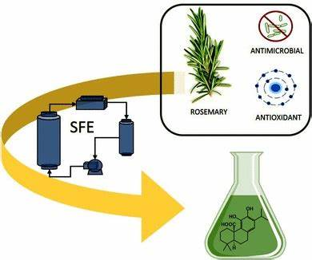

Cómo extraer el aceite del romero en tan solo 5 pasos
El aceite de romero se ha popularizado en los últimos años, pues se han encontrado grandes beneficios al
utilizarlo en el cabello. Este aceite ayuda a hidratar el cabello y el cuero cabelludo; además le da
brillo al cabello y lo hace mucho más fácil de peinar.
Además de usarlo en tu rutina de belleza, también puedes aprovechar este aceite y hacer platillos
deliciosos. Úsalo en platillos con cerdo, papas al horno y filetes de pescado con ajo, ¡les dará un
sabor extraordinario!
Hoy en día no podemos conseguir el aceite de romero en el supermercado, por lo que es mucho más fácil
y económico hacerlo en casa. Este proceso puede ser un poco largo, puedes debes dejar el romero a baño
maría por tres horas, ¡pero no te preocupes! No necesitas estar tres horas pegada a la estufa.
¿Cómo hacer aceite de romero en casa? Utensilios
1.-Manojo de Romero
2.-Una charola para horno
3.-2 tasas de aceite vegetal
4.-1 Olla
5.-1 Tazón
6.-Agua
7.-1 Colador
8.-1 Frasco de vidrio con tapa
Paso a paso:
SEPARA el manojo de romero y coloca cada rama sobre una charola para horno; asegúrate de que no se encimen.
COLOCA la charola para horno con el romero en el horno apagado y deja que el romero se seque por dos días;
pasado este tiempo separa las hojas de los troncos.
AGREGA agua a la olla y encima de la olla acomoda el tazón; agrega al tazón 85 gramos de hojas de romero seco
y dos tazas aceite vegetal.
HIERVE a fuego bajo por al menos tres horas; pasado este tiempo, cuela el aceite en un frasco limpio y
esterilizado.
CONSERVA el aceite de romero en un lugar seco y oscuro.
